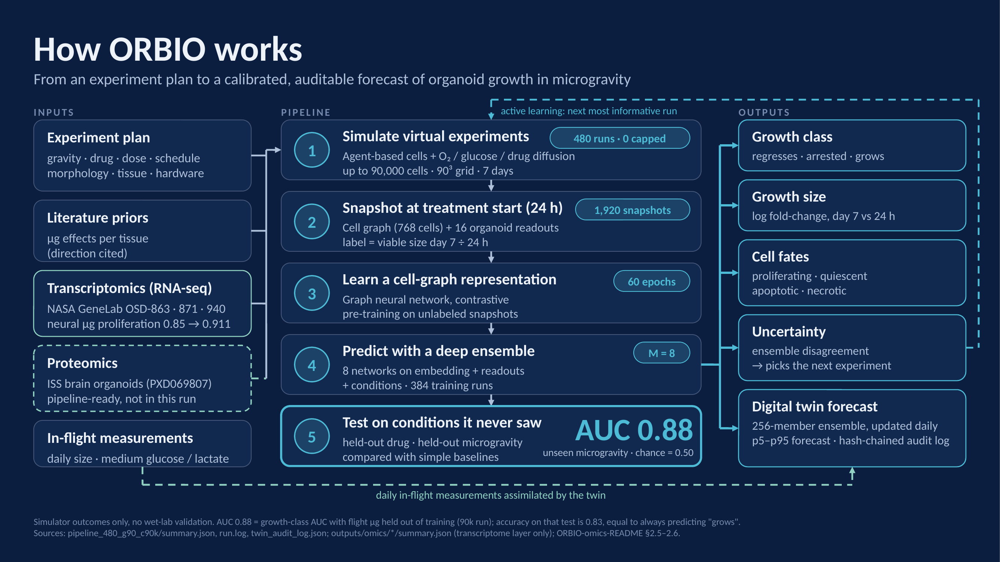

ORBIOA VIRTUAL ORGANOID FOR MICROGRAVITY
Rehearse the experiment before you fly it.
Flights to orbit are rare, costly and small. ORBIO simulates how a 3D mini-tissue grows and responds to drugs in microgravity, so you can compare designs on the ground, pick the ones worth flying, and keep watch once they are up there.
How it works

WHAT WE BUILD
Software that predicts your experiment in orbit.
Decide earlier. Move faster.